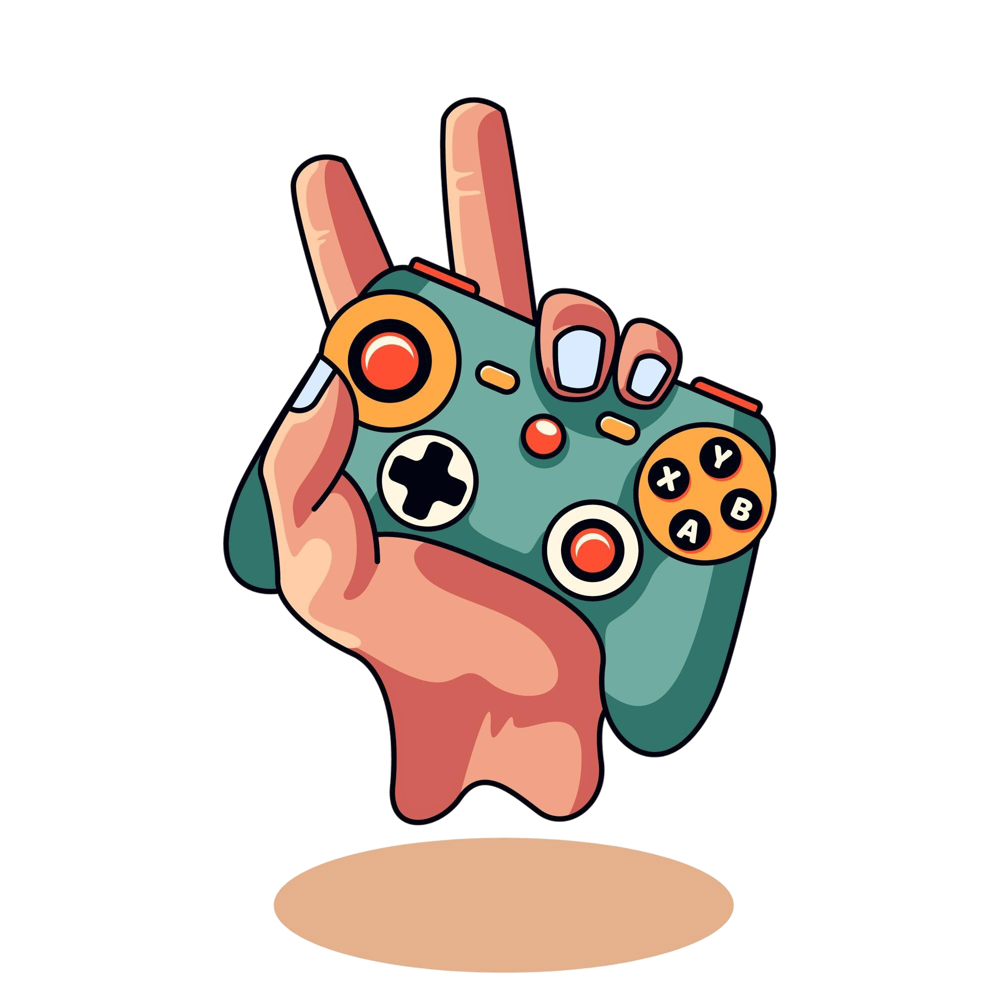
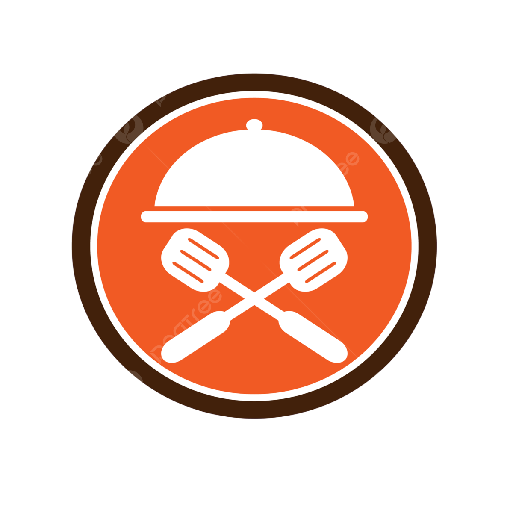

Haikal Kamil
Anak Bawang
Phone
Email
haikalkamil@gmail.com
Location
Jakarta, Indonesia
About Me
Dalam tim pengembangan web, anak bawang adalah anggota baru yang belum diberi tugas penting dan lebih banyak mengamati. Meski perannya kecil, kehadirannya membantu suasana kerja jadi lebih hidup dan bisa belajar banyak dari yang lebih senior.
Anak bawang dalam pembuatan web sebaiknya menguasai dasar-dasar HTML, CSS, JavaScript, serta cara menggunakan Git dan membaca kode orang lain. Meski belum pegang tugas besar, kemampuan belajar cepat dan komunikasi yang baik sangat penting untuk berkembang di tim.
What I Do !!!

BERMAIN GAME
Saya memiliki hobi bermain game karena dapat melatih strategi, ketelitian, dan menjadi cara menyenangkan untuk mengisi waktu luang serta melepas stres.

MENONTON YOUTUBE
Saya memiliki kebiasaan menonton YouTube setiap kali memiliki waktu luang untuk mencari hiburan atau informasi. Setiap video yang saya tonton memberi wawasan baru dan menyegarkan pikiran. Selain itu, menonton YouTube juga menjadi cara saya untuk bersantai setelah seharian beraktivitas.
TIDUR
Saya memiliki kebiasaan tidur yang cukup teratur setiap malam untuk menjaga kesehatan tubuh. Tidur yang nyenyak membantu saya merasa segar dan siap menghadapi hari berikutnya. Selain itu, tidur juga menjadi waktu untuk mereset pikiran dan mengembalikan energi setelah seharian beraktivitas.

MAKAN
Saya memiliki kebiasaan makan yang selalu melibatkan mencoba berbagai rasa baru yang unik dan menggugah selera. Setiap makanan baru memberi pengalaman yang menyenangkan dan memuaskan. Selain itu, makan juga menjadi waktu untuk bersantai dan menikmati kebersamaan dengan orang-orang terdekat.